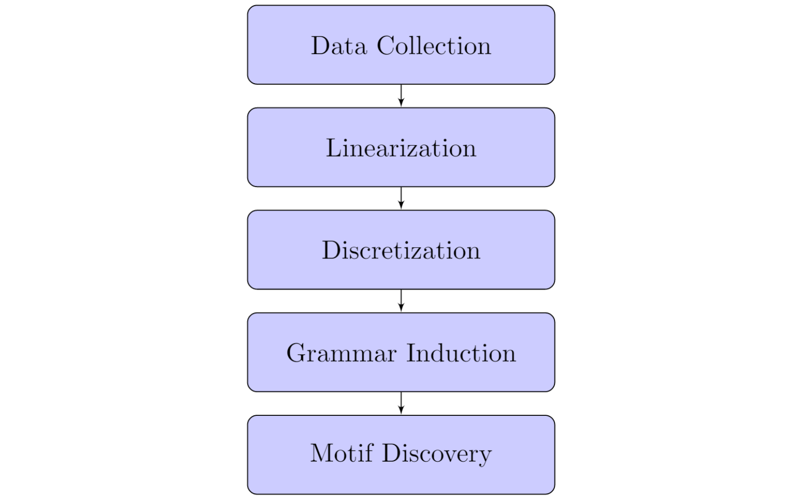
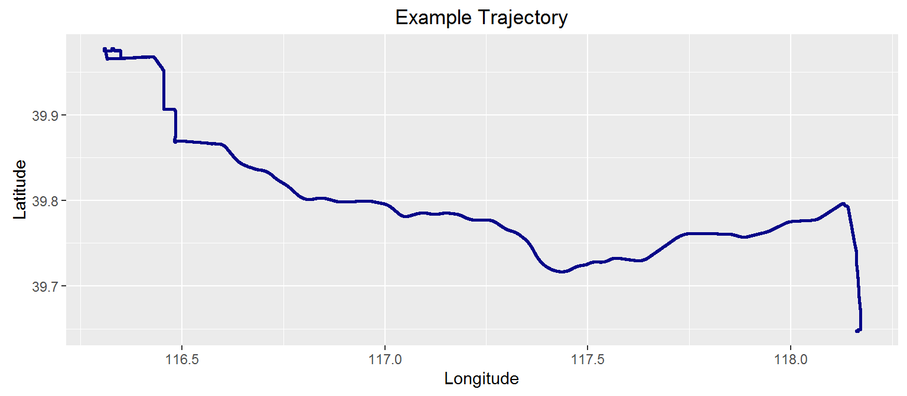
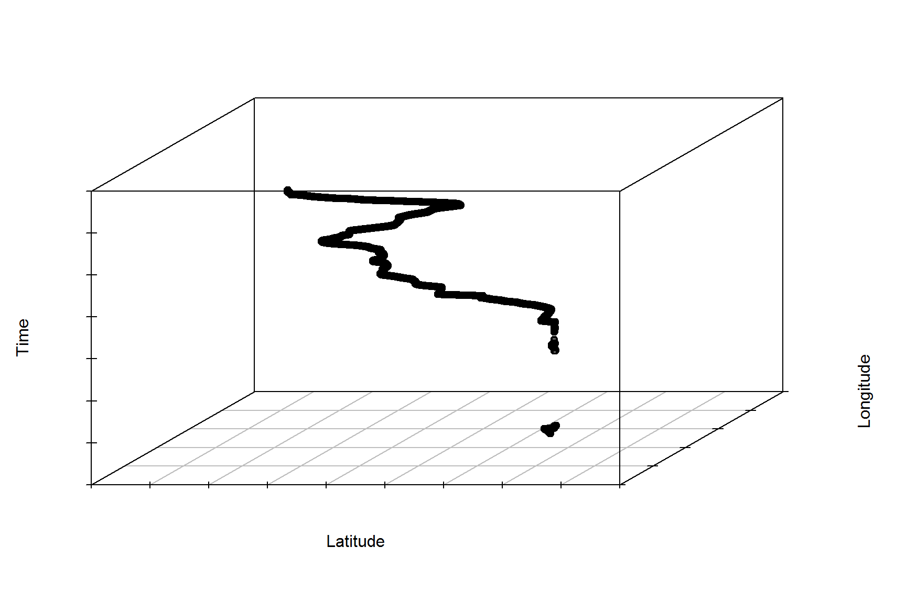
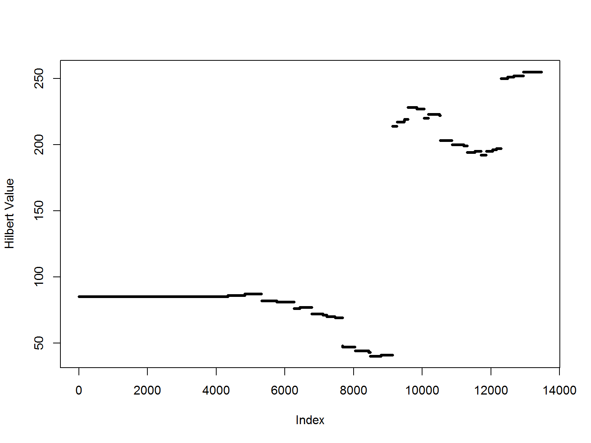
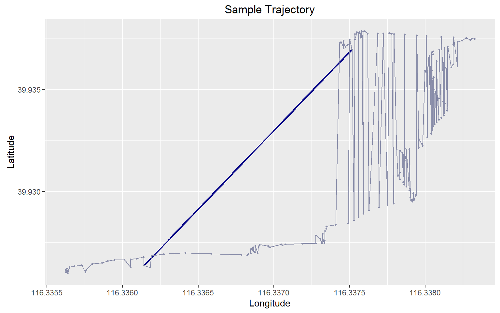
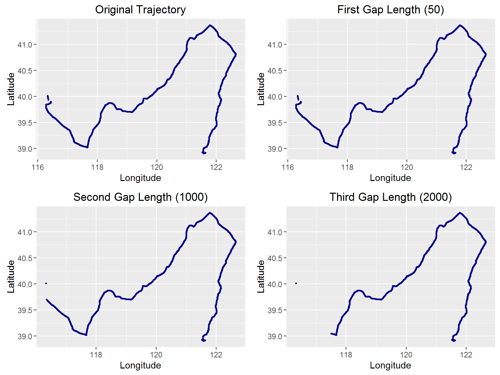
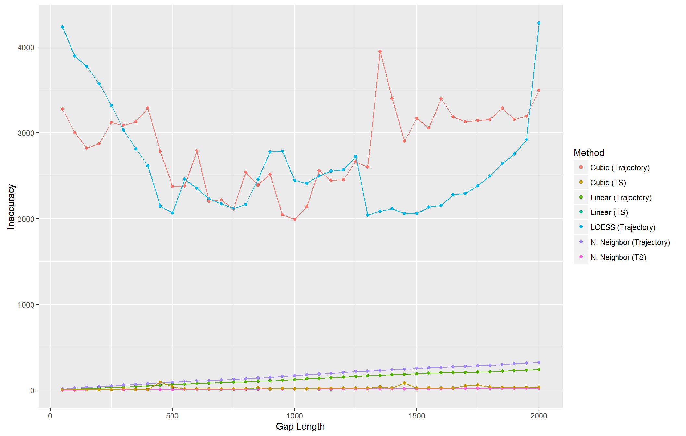
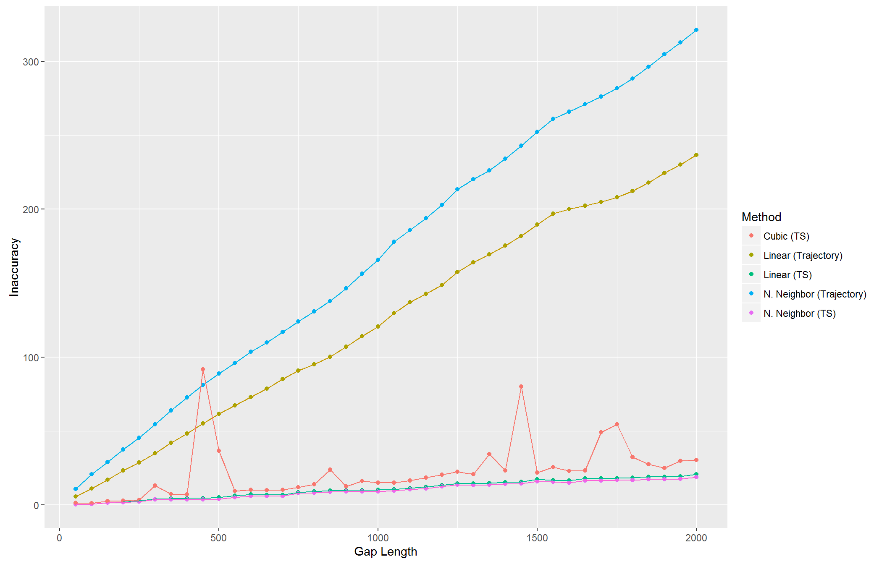

Spatiotemporal moving object trajectories
Large, noisy data
Hidden, nontrivial patterns and relationships (including associations between trajectories)

GeoLife Data
39.906631,116.385564,0,492,40097.5864583333,2009-10-11,14:04:30



Identify potential interpolation methods
Assess interpolation methods
Determine effects at different preprocessing stages



